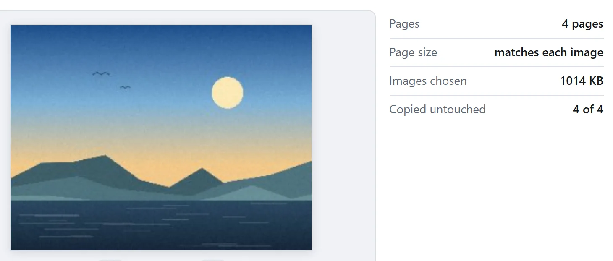
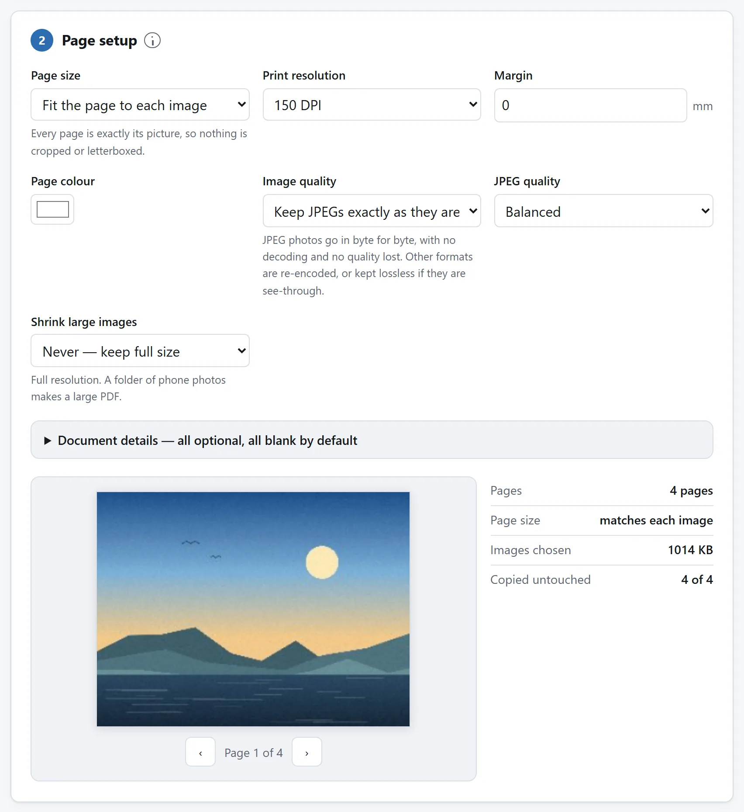

先说结论
打开图片转 PDF，放入图片，拖动卡片排好顺序，再生成文档。默认让每页适合对应图片，并原样保留符合条件的 JPEG，不重新编码。接收方要求标准纸张时，明确选择 A4 或 Letter。
值得多想一下的有四件：顺序、页面大小、画质设置，还有这份文档会把你交代多少。按出错的频率排，就是这个顺序。

申请材料，或维修记录
入学申请、报销或证明材料只加入所需图片，按收件方清单排序。指定纸张就选 A4 或 Letter，选择“放进页边距内”，避免边缘编号被裁掉。转正横倒的页面，生成 PDF 后打开下载文件，检查页数和最小文字。已有 PDF 页再用合并工具加入。
保修记录可按收据、序列号标签、故障照片排序。照片比例不同就让每页适配图片，小字截图用无损存储。每张图单独成一页，不会生成联系表或可搜索文字。原图与 PDF 一起保留。
别的都先放下，先把顺序弄对
页序是最常出错的那一件，因为文件名的排序方式没人猜得中。按字母排，IMG_2.jpg 排在 IMG_10.jpg 后面，因为比较是一个字符一个字符来的，而 1 在 2 前面。一个文件夹里从 page1 到 page12 的扫描件，在几乎任何工具里都会以错误的顺序进来。
照片一般按拍摄日期排更靠谱，因为你就是照着页面的先后顺序一张张拍下来的。不管用哪种，都请在按下按钮之前核对那些卡片，而不是生成之后再去核对 PDF。
画质：多数工具在这儿悄悄做错了
PDF 能直接装 JPEG 数据。这是格式自带的性质：一张 JPEG 压缩后的字节可以原样丢进文档里，阅读器解码它的方式跟浏览器一样。
这一点要紧，因为它意味着照片在进 PDF 的路上可以什么都不丢。它不解码，也不再压一遍，文档里那张图跟你文件里那张，一位一位都相同。可很多工具照样重编一遍，因为把所有东西都渲染到画布上、再统一编码要省事得多，代价是白白掉掉一代画质。
其他格式不能这样原样放入。PNG、WebP、AVIF 等没有对应的 PDF 滤镜，必须转换。你可以选择转换方式：
- 重编成 JPEG（默认）。文件最小，画质代价很小，照片用它是对的。
- 无损。把像素原样存下来，代价是文档大得多。截图、示意图，以及任何带文字或者硬边的东西该用它，因为 JPEG 的痕迹在这些上面一眼就能看见。
页面大小，以及什么时候“跟着图片走”更好
选一个标准页面大小，A4、Letter、Legal、A3、A5、Tabloid，就是把每张图摆到那么大的一页上，按你留的页边距缩放着放进去。文档要拿去打印，或者要被哪个正式机构归档，就用这种。
“正好等于每张图本身”让每一页都跟自己那张图一样大，于是没有白边，也完全不缩放。这个 PDF 只是装图片的容器、而不是一份文档时用它：作品集、一组截图、一本漫画。打印出来会很难看，因为每一页都不一样大。
凡是要打印的，留点页边距是值得的。家用打印机印不到纸的边缘，一张顶到边的照片印出来会被切掉一圈。
横着拍的照片，要竖着的页面
你要是把手机横过来拍纸页，每张图都是横的，摆在竖版页面中间只有小小一块。解决办法是在生成文档之前把每张转九十度，而这是一张一张选的，不是一刀切的，因为通常总有几张本来就拍正了。

做好的 PDF 会把你交代多少
PDF 里带着一块文档信息：作者、生成器、创建日期，有时候还有标题。看是什么软件写的，这里面可能包含你的账号名、机器名，以及你做它的确切时间。
这值得想一想，因为 PDF 本来就是拿去发给别人的东西，求职申请、理赔材料、给房东的文件。元数据跟着它走，任何阅读器都能显示出来。
这里的工具把那一块留空，只写自己的名字：没有文件名，没有机器名，没有用户名，你不勾那个框，连创建日期都没有。你要是用别的工具，值得把结果的属性打开看一次，看看它写了什么。
另外还有图片本身。你的照片要是带着 EXIF 和 GPS 标签，它们的下场取决于走哪条路：一张不重编、直接抄进去的 JPEG，里面有什么就还是什么；而被重新编码的图片，标签会作为副产品消失。你要是在意，那就先用 EXIF 查看与清除把照片清一遍，里面到底有什么，它那篇指南讲了。
要是 PDF 出来太大
手机照片本来就大，二十张凑一份文档，邮件根本不收。按顺序试这三招：
把最长边缩一缩。一张 4000 像素的纸页照片，扛着的细节远超任何阅读器或者打印机用得上的量。把长边降到 2000 像素上下，文件通常小掉四分之三，而页面上谁也看不出区别。
照片类用 JPEG，别用无损。无损是给示意图用的，用在一张纸页照片上就是选错了。
把做好的文档再压一遍。PDF 压缩是按每张图在页面上实际画多大来算的，不是按它的像素数，而这才是要紧的那个量度；这一下的代价，它那篇指南里讲了。
工具本身对图片数量没设上限。真正的天花板是你这台机器的内存，因为成品文档要在那儿拼好你才能下载。最先撑不住的是几百张全分辨率的手机照片，而把最长边缩一缩，这道天花板一下能抬高很多。
这么做拿不到什么
照片做出来的 PDF，就是一份塞满图片的 PDF。里面那些字不是文字：搜不了，复制不了，读屏软件也读不出来。这是你手上原材料的性质，不是转换造成的。
需要可搜索的文字，那得上 OCR，那是另一件活。而要是原始文档还以文档的形式存在某处，直接把它导成 PDF 永远比拍照强：更小、更清楚、还能搜。
为什么这件事不用上传
写一个 PDF，就是写一个结构化文件：一个文件头、一堆对象、一张交叉引用表。这里面没有哪一步是浏览器干不了的，也没有哪一步要求图片跑到别处去。
这在这儿值得在意，因为人们往这类文档里装的是什么：身份证件、银行流水、诊断报告、签好的合同。一个人之所以要做 PDF，通常就是因为他要把它发给某个机构。这里的工具没有任何联网功能，页面的 Content-Security-Policy 把它可能联的地址全列了出来，没有一个是本站的。
这一条怎么自己核实，不管在这儿还是在别处，把文件传给在线转换器安全吗？里写了。